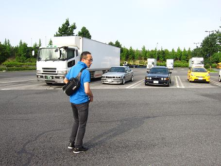
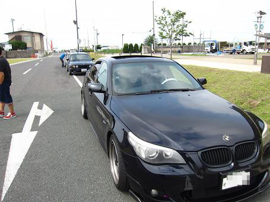
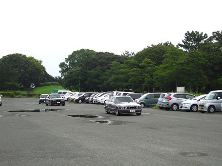
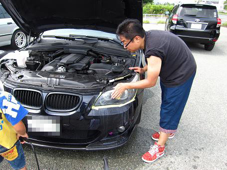
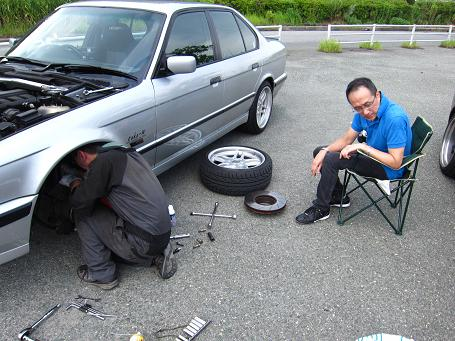
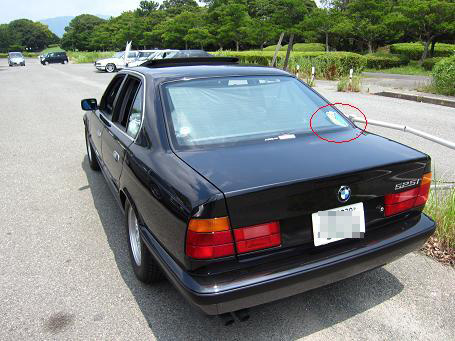
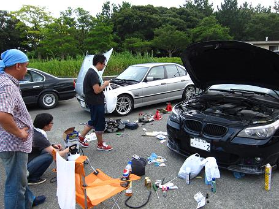
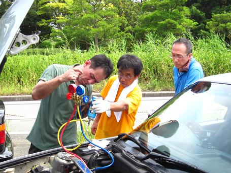
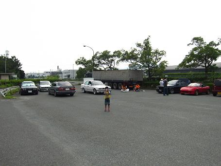

2014/7/20 蒲郡メンテオフ
  御在所ＳＡで“といさん”と合流！会場へ向かうものの・・・ この日は連休！いつものメンテ会場は花火大会で立ち入り禁止に（汗 |
 chachaさんが見つけた近くの駐車場へ移動！ 前泊組みも到着！ 今回もＴＩ〇Ａさんと牛ち○んは同じ部屋に泊まったそうだ♥ どーゆう関係かはご本人たちに聞いてください（照 |
  さっそくメンテ開始！ ヘッドライト磨きとロアアームブーツの交換＾＾ 炎天下の中での足回りの作業はかなり大変そうだ。 |
 免許を再取得した“ともパパ号”には若葉マークが！ 内貼りなので超高速でも飛んでいく心配はなさそうだ。 ちなみに１００均の若葉マークは磁力が弱く、ぬえわオーバーで飛んでいくのでE34に若葉マークを付ける時は注意が必要だ。 過去に装着して１０分で落ち葉になったことがあった（笑 |
  ヘッドライトを磨く“こぉーさん”に厳しい指導をする牛ちゃん＆めたぼーさん 牛ちゃん「ここ磨き足らんやん！」 こぉーさん「厳しいなぁ～ もういいよ～（ ´Д⊂ヽエーーン」 牛ちゃん「アカン！磨いたるわ！」 めたぼーさん「お～綺麗なった！」 の図と TINAさんとchachaさんはエアコンのガスﾁｬｰｼﾞ！ マニホールドゲージまで持ってるとは・・・（驚 こんな感じで作業は続きます（笑 |
 花火大会で混んでくる前に撤収！ 写真は「次はいつなの？」と名残惜しそうなともパパＪｒ 細部まで各車両の特徴を見分ける今後が楽しみなＥ３４Ｊｒだ。 さて、次の開催はいつだろうか。 |